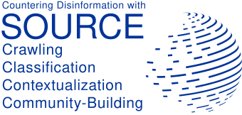

<!-- .slide: class="title-slide" --> ## SOURCE ### Scalable, Open and Comprehensive Recognition of Disinformation Campaigns on the Web Prof. Dr. Michael Granitzer Chair of Data Science, University of Passau --- <!-- .slide: class="module-slide" --> ## 1. Overview -- ## SOURCE At A Glance <p class="lead"><span class="accent">SOURCE</span> builds an open European infrastructure for detecting and analysing disinformation campaigns across web and social-media content.</p> <div class="stat-grid small"> <div class="stat-card"> <h3>Core idea</h3> <p>Collect large-scale digital traces, analyse them with AI, and publish potential disinformation artefacts in an open database.</p> </div> <div class="stat-card"> <h3>Infrastructure base</h3> <p>Extend <strong>OpenWebSearch.eu</strong> and the <strong>Open Web Index</strong> instead of depending on closed search and platform APIs.</p> </div> <div class="stat-card"> <h3>Project structure</h3> <p>Five linked modules: provenance analysis, content analysis, dissemination, infrastructure, and operational use cases.</p> </div> <div class="stat-card"> <h3>Expected result</h3> <p>Open data, open interfaces, reproducible workflows, and practical support for researchers, analysts, and fact-checking communities.</p> </div> </div> -- ## Consortium Overview <div class="partner-grid small"> <div class="partner-card"> <h3>University of Passau</h3> <p>Coordination, crawling extension, provenance analysis, diffusion modelling, and platform integration.</p> </div> <div class="partner-card"> <h3>University of Kassel</h3> <p>AI-generated content detection, fact checking, rhetoric and argumentation analysis, and evaluation.</p> </div> <div class="partner-card"> <h3>Open Search Foundation</h3> <p>Community building, dissemination, open-source transfer, and stakeholder-facing activities.</p> </div> <div class="partner-card"> <h3>LRZ</h3> <p>HPC backbone, federated storage, and scalable workflow orchestration.</p> </div> <div class="partner-card"> <h3>Alliance4Europe</h3> <p>Use cases, analyst workflows, co-creation, and evaluation with practice partners.</p> </div> <div class="partner-card"> <h3>Associated communities</h3> <p>Fact-checking, research, and policy-facing communities help validate and operationalise the project outputs.</p> </div> </div> -- ## High-Level Architecture <div class="columns"> <div class="column col-3"> - **Collect** web and social-media traces at scale - **Enrich** artefacts with content signals and provenance metadata - **Link** related content via similarity, timing, actors, and diffusion patterns - **Expose** results through open interfaces, data services, and analyst-facing tools <div class="soft-panel small"> SOURCE combines content-based and provenance-based evidence. The project is not just about detecting false claims, but about tracing coordinated campaigns. </div> </div> <div class="column col-2 middle">  </div> </div> --- <!-- .slide: class="module-slide" --> ## 2. Uni Passau -- ## University Of Passau As Partner <div class="columns"> <div class="column col-3"> ### Role in SOURCE - project coordination - extension of data acquisition and crawling workflows - provenance-oriented analysis of content spread - temporal diffusion modelling and actor-network reconstruction - integration into shared HPC and storage infrastructure <div class="c-info small"> Passau is the bridge between <strong>open search infrastructure</strong> and <strong>campaign-level disinformation tracing</strong>. </div> </div> <div class="column col-2 middle">  </div> </div> -- ## Prior Work In OpenWebSearch.eu <div class="columns col-1-2"> <div class="column"> <div class="c-green small"> **Open Web Index** - about **10+ billion indexed documents** - **500+ public datasets** - open crawl, index, corpora, and dashboard infrastructure </div> <div class="c-info small"> Passau has already helped build the technical basis that SOURCE can now extend instead of rebuilding from scratch. </div> </div> <div class="column middle">  </div> </div> -- ## Prior Work: OURRS And Open Access <div class="columns"> <div class="column">  <div class="small center"> Hosted access to OWI content via `ourrs.eu` </div> </div> <div class="column">  </div> </div> <div class="small"> - **OpenWebSearch.eu** provides the open data and indexing layer. - **OURRS / OUR²S** provides a usable retrieval and API layer. - **SOURCE** can build on both and add provenance-aware, disinformation-focused analysis services. </div> --- <!-- .slide: class="module-slide" --> ## 3. Goals Uni Passau -- ## Goals From The Proposal <div class="stat-grid small"> <div class="stat-card"> <h3>Crawling extension</h3> <p>Expand the existing OpenWebSearch setup toward relevant social-media and campaign-oriented sources.</p> </div> <div class="stat-card"> <h3>Similarity tracking</h3> <p>Develop scalable similarity-preserving hashing and chunking to link reused and modified content.</p> </div> <div class="stat-card"> <h3>Provenance analysis</h3> <p>Model temporal diffusion, origin traces, coordination patterns, and actor networks behind campaigns.</p> </div> <div class="stat-card"> <h3>Infrastructure integration</h3> <p>Operationalise the methods in shared HPC workflows, storage systems, and interoperable interfaces.</p> </div> </div> -- ## Uni Passau Focus In SOURCE <div class="columns"> <div class="column col-3"> - extend **OWS** from web indexing to web-plus-social-media monitoring - connect artefacts through **text similarity**, **image similarity**, and **diffusion signals** - shift from single-item analysis to **campaign reconstruction** - support open, reproducible, and reusable workflows for other partners <div class="c-orange small"> The proposal already defines crawling, provenance, and infrastructure work. A practical extension is to add an explicit <strong>agent layer</strong> that automates parts of the disinformation analysis process. </div> </div> <div class="column col-2 middle">  </div> </div> -- ## Additional Goal: Agent Layer <div class="stat-grid small"> <div class="stat-card"> <h3>Collection agents</h3> <p>Monitor sources, trigger focused crawls, and collect supporting evidence around suspicious artefacts or narratives.</p> </div> <div class="stat-card"> <h3>Analysis agents</h3> <p>Summarise provenance signals, compare near-duplicate text and images, and prepare candidate explanations for analysts.</p> </div> <div class="stat-card"> <h3>Verification agents</h3> <p>Cross-check claims against known sources, prior items, and campaign patterns to prioritise artefacts for human review.</p> </div> <div class="stat-card"> <h3>Workflow agents</h3> <p>Orchestrate pipelines across retrieval, hashing, graph construction, and reporting to reduce analyst overhead.</p> </div> </div> <div class="c-info small"> This agent layer fits naturally on top of OWS + OURRS + SOURCE infrastructure and turns the platform into an active analysis environment. </div> --- <!-- .slide: class="module-slide" --> ## 4. Next Steps -- ## Next Step 1: Crawling Data Sources <div class="columns"> <div class="column"> ### Candidate sources - Telegram - Bluesky - Instagram - campaign-related web domains and media mirrors - cross-platform link targets and repost chains </div> <div class="column"> ### Questions - Which sources are technically feasible and legally robust? - Where do we have the highest value for provenance reconstruction? - Which data can be collected continuously, not only ad hoc? - How do we align source collection with OWS infrastructure and storage? </div> </div> -- ## Next Step 2: Image Hashes For Provenance Tracking <div class="columns"> <div class="column col-3"> - create similarity-preserving hashes for images and image variants - detect reposts, crops, overlays, and small manipulations - connect images across platforms and across web pages - use image-level links as additional provenance evidence in campaign graphs <div class="c-green small"> Image hashing complements text-based provenance and is especially important for memes, screenshots, and reused visual assets in coordinated campaigns. </div> </div> <div class="column col-2 middle">  </div> </div> -- ## Next Step 3: Agentic Disinformation Workflow <div class="columns"> <div class="column"> ### Pipeline 1. detect suspicious content or narratives 2. expand evidence through search and crawling 3. link text and images via similarity and provenance 4. reconstruct diffusion and actor patterns 5. prepare analyst-facing reports and prioritised alerts </div> <div class="column"> ### Outcome - faster triage - better cross-platform evidence collection - reproducible analysis chains - human-in-the-loop validation instead of black-box automation <div class="c-info small"> The target is not a fully automatic truth machine, but an open workflow that helps analysts trace campaigns more efficiently and transparently. </div> </div> </div> --- <!-- .slide: class="module-slide" --> ## 5. Demo -- ## Demo TODO <div class="c-orange center"> TODO: add demo flow here later </div> <div class="soft-panel small"> Possible content for later: <br /> - retrieval demo via OURRS <br /> - provenance trace over linked artefacts <br /> - image-hash example <br /> - agent-supported analyst workflow </div> --- ## Summary <div class="c-navy center"> SOURCE can position Uni Passau as the partner that extends <strong>OpenWebSearch</strong> into <strong>open, provenance-aware, agent-supported disinformation tracing</strong>. </div> <div class="logo-strip"> <p></p> </div>